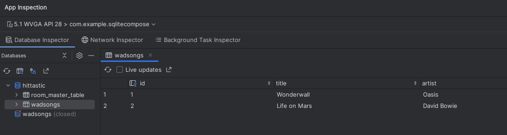

This week we will look at Android on-board databases by taking a look at SQLite and the Room Persistence API.
@OverrideIn Java, this specifies that the following method will override a method of the superclass. If it does not, the compiler will generate an error. In Kotlin, this is not necessary as the override keyword does the same thing.
@DeprecatedMarks that the method following is deprecated. Any other code calling this method will generate a compiler warning, informing the developer that the method is deprecated (outdated, with a better replacement available)
public class Cow extends Animal {
// If there's no makeNoise() in Animal, compiler will give an error
@Override
public void makeNoise() {
System.out.println("Moo!");
}
@Deprecated
public void moo() {
System.out.println("Moo!"); // intention is that moo() has been deprecated in favour of makeNoise()
}
public static void main (String[] args) {
Cow cow = new Cow();
cow.moo(); // compiler generates deprecation warning
}
}
Cow cow = new Cow(); cow.moo();would generate a compiler warning about using a deprecated method.
A Room application with one database table would contain, as a minimum, these four classes:
import androidx.room.Entity
import androidx.room.PrimaryKey
@Entity(tableName="students")
data class Student(
@PrimaryKey(autoGenerate = true) val id: Long,
val name: String,
var course: String, var mark: Int
)
@ColumnInfo, e.g:
import androidx.room.Entity
import androidx.room.PrimaryKey
@Entity(tableName="students")
data class Student(
@PrimaryKey(autoGenerate = true) val id: Long = 0,
@ColumnInfo(name="the_name") val name: String,
@ColumnInfo(name="the_course") var course: String, var mark: Int
)
In this example the columns used in the actual database will be the_name and the_course.import androidx.room.*
@Dao
interface StudentDao {
@Query("SELECT * FROM students WHERE id=:id")
fun getStudentById(id: Long): Student?
@Query("SELECT * FROM students")
fun getAllStudents(): List<Student>
@Insert
fun insert(student: Student) : Long
@Update
fun update(student: Student) : Int
@Delete
fun delete(student: Student) : Int
}
import android.content.Context
import androidx.room.Database
import androidx.room.Room
import androidx.room.RoomDatabase
@Database(entities = arrayOf(Student::class), version = 1, exportSchema = false)
public abstract class StudentDatabase: RoomDatabase() {
abstract fun studentDao(): StudentDao
companion object {
private var instance: StudentDatabase? = null
fun getDatabase(ctx:Context) : StudentDatabase {
var tmpInstance = instance
if(tmpInstance == null) {
tmpInstance = Room.databaseBuilder(
ctx.applicationContext,
StudentDatabase::class.java,
"studentDatabase"
).build()
instance = tmpInstance
}
return tmpInstance
}
}
}
This is a basic and incomplete example showing how to set up the activity to load the database. It also shows how to query a Room database inside withContext().
// Other imports left out...
import kotlinx.coroutines.Dispatchers
import kotlinx.coroutines.launch
import kotlinx.coroutines.withContext
class MainActivity: ComponentActivity() {
lateinit var db: StudentDatabase
override fun onCreate(savedInstanceState: Bundle?) {
super.onCreate(savedInstanceState)
db = StudentDatabase.getDatabase(application)
setContent {
Button(onClick = {
lifecycleScope.launch {
withContext(Dispatchers.IO) {
// Room code should go here
// Create an example Student and add it to the database
val s = Student(name="Alex Smith", course="SE", mark=77)
db.studentDao().add(s)
}
// UI code should go outside the "withContext()" block
}
}
}) {
Text("Add Student")
}
}
}
}
This example provides the opportunity to introduce the Kotlin lateinit keyword. We need to declare our database object outside onCreate(), because other methods need to access it. However, we cannot initialise it outside onCreate(), as, before onCreate() runs, the application will not be setup properly (we will look at the Android lifecycle in a future session).
How do we solve this? We declare db as a lateinit variable. lateinit states that the variable will be initialised later, when it is possible to do so. Note that in the code example above, we initialise it in onCreate(), when the app is ready for the database.
We could alternatively make it a nullable, e.g:
class MainActivity: ComponentActivity() {
var db : StudentDatabase? = null
override fun onCreate(savedInstanceState: Bundle?) {
db = StudentDatabase.getDatabase(application)
....
}
}
This works, however because the map variable is nullable, we have to do null-safety checks throughout our code when using it.
You can view your database from Android Studio by selecting View-Tool Windows-App Inspection. You have to use a device running at least API 26 to do this. Here is an example:

Develop an application to store music in an SQLite database using Room. You'll need four classes: the data entity, the DAO, the database and the main activity. You'll need these dependencies in your build.gradle (note that newer versions may be available):
implementation("androidx.room:room-runtime:2.6.1")
implementation("androidx.room:room-ktx:2.6.1")
ksp("androidx.room:room-compiler:2.6.1")
ksp. What is this? KSP (Kotlin Symbol Processing) is a tool which will process Java-based annotations in Kotlin code, such as the annotations used by Room. See the documentation.
To set up KSP you need to add it to the project build.gradle.kts (the first of the two, labelled with Project), within the plugins:
id("com.google.devtools.ksp") version "1.9.0-1.0.13" apply false
Note the version here 1.9.0-1.0.13. You may need to change this for your system. The first number is the Kotlin version and the second number is the KSP version. You need to choose a version which corresponds to your Kotlin version (1.9.0 in this eaxmple). To find out the Kotlin version, go to File-Settings-Kotlin Compiler in Android Studio:
Also, add this line to the plugins section of the app build.gradle.kts (the second):
id ("com.google.devtools.ksp")
For a currently-unknown reason, KSP is not compatible with some configurations of Android Studio, including the lab computers. If you obtain obscure errors when using KSP, please use the older KAPT tool instead. To use KAPT instead of KSP:
plugins in the Project build.gradle.kts;plugins in the App build.gradle.kts with:
id("kotlin-kapt")
as shown below:
compileOptions and kotlinOptions from 1.8 to 17 in the app build.gradle.kts, as shown below:
kapt instead of ksp:
Use a device running at least API level 26 so you can use the Database Inspector to visualise your database.
The Activity should have a layout with four fields: ID, Title, Artist and Year, with four buttons (Search by ID, Add, Update, Delete). These buttons should have the following effects. Each should call an appropriate method in your DAO. These buttons should perform the following operations:
Save data in a local database using Room - Android documentation on Room.